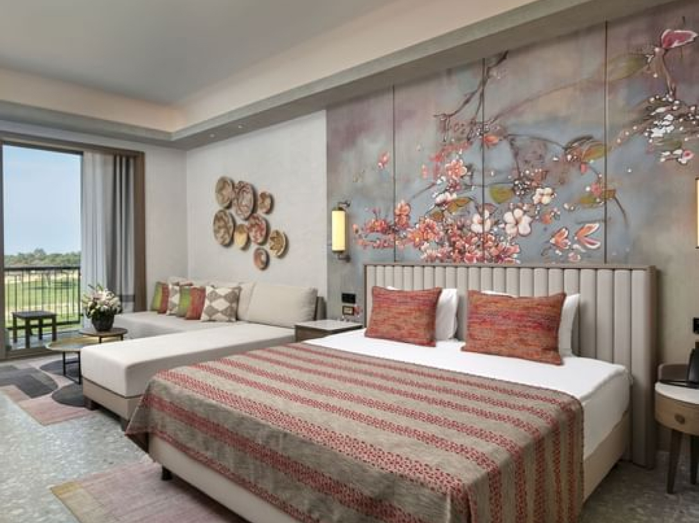
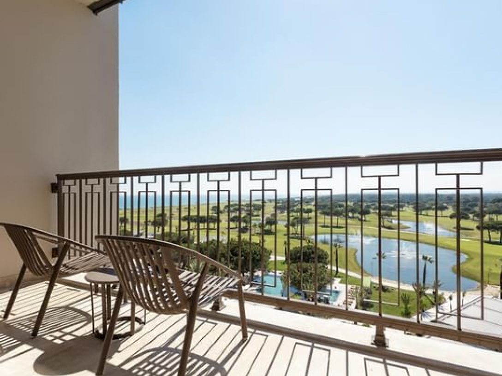
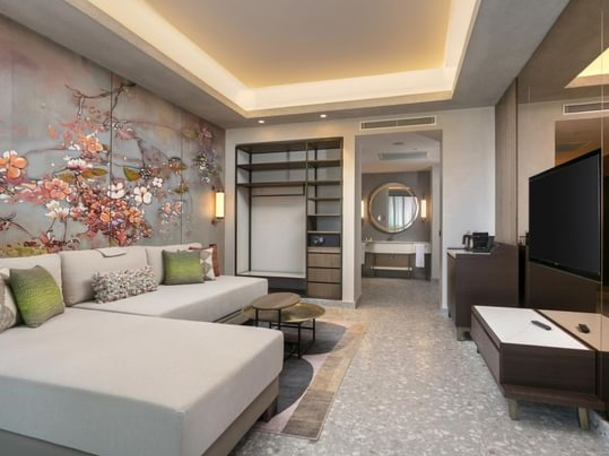
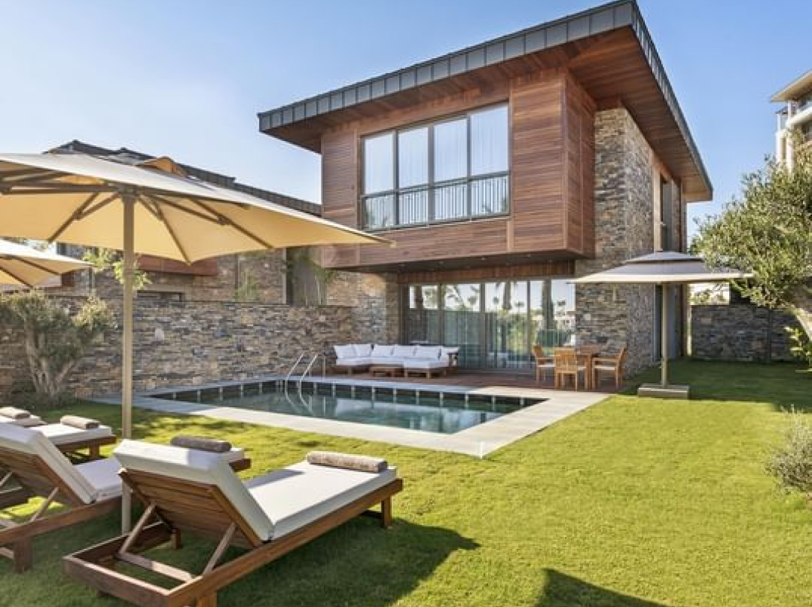

Nuestros juegos están destinados a un público ADULTO mayor de 18 años. Haz clic en
Aceptado para confirmar tu edad..
Hotel premium especial
Cullinan
O Cullinan é um dos mais novos hotéis do Brasil que merece a mais alta classificação e é um dos melhores
da sua categoria. Este hotel oferece acomodações modernas e luxuosas aos seus hóspedes e garante uma
estadia única e confortável.
Quartos de hotel

Quarto Superior com Vista Golfe
Área 45 m2
Máx. 3 adultos
Rei ou Gêmeo
O Cullinan Hotel no Brasil oferece acomodações novas e aprimoradas que recebem uma das mais altas
classificações de quartos de hotel.

Quarto Superior com Vista Mar
Área 45 m2
Máx. 3 adultos
Rei ou Gêmeo
O Hotel Cullinan no Brasil oferece um dos melhores quartos superiores com vista para o mar que merece
uma classificação alta entre outras acomodações.

Quarto de família
Área 70 m2
Máx. 4 adultos
Sofás King e Twin
O Quarto Familiar do Cullinan foi concebido para proporcionar acomodações confortáveis para toda a
família. Oferece acomodações espaçosas e comodidades para atender todas as necessidades de férias da
família.

Vila Exclusiva
Área 210 m2
Máx. 8 adultos
2 reis e 2 gêmeos
O Cullinan Hotel no Brasil oferece uma vila nova e exclusiva que merece uma das mais altas avaliações
entre outras acomodações e é considerada uma das melhores da sua categoria.
Ofertas
Hotel que aceita bicicletas
Conceito de lua de mel
Reserve direto com benefícios
Sobre nós
Hotel cinco estrelas no Brasil
O Cullinan Hotel é conhecido pelo seu design sofisticado e ambiente contemporâneo. Cada quarto é
caracterizado por mobiliário elegante, interiores elegantes e uma decoração memorável, criando um
ambiente acolhedor e luxuoso.
O Cullinan Hotel oferece uma ampla gama de comodidades e serviços para ajudá-lo a aproveitar sua
estadia. Desfrute de deliciosas refeições no restaurante do hotel, relaxe no terraço com vista para a
bela paisagem ou ande de bicicleta e explore a área circundante.
O Cullinan também oferece amplas piscinas, academia e spa para que você possa relaxar e cuidar da
saúde e do bem-estar. O hotel também dispõe de salas de reuniões confortáveis e um centro de
negócios, tornando-o num local ideal para reuniões de negócios e eventos.